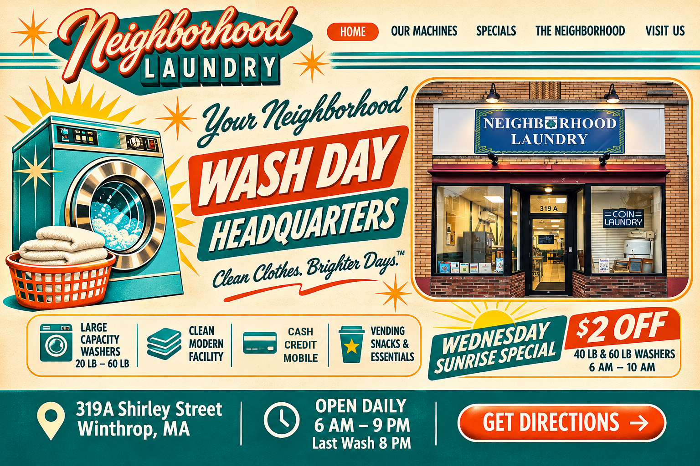

Our Machines
Washers for loads of all sizes, from 20 to 60 lb, and convenient large-capacity drying.
See machine sizes
Modern laundry convenience with a little old-school neighborhood charm. Find us at 319A Shirley Street in Winthrop.
Washers for loads of all sizes, from 20 to 60 lb, and convenient large-capacity drying.
See machine sizes$2 off 40 lb and 60 lb washers every Wednesday from 6 AM to 10 AM.
Plan your visit319A Shirley Street
Winthrop, MA
Open daily 6 AM–9 PM
Last wash starts at 8 PM.
Load your reusable laundry card at either of our in-store kiosks using:
Get $2 in bonus credit for every $20 deposited in cash.
Use your reusable laundry card to start the washers and dryers.
20–60 lb capacity
Choose from 20, 30, 40, and 60 lb washers to fit your laundry day.
16 dryer pockets
16 spacious dryer pockets, each with a 30 lb capacity.
Forgot something? Our vending machine carries snacks, drinks, and laundry essentials.
Winthrop is a close-knit seaside community, and we’re proud to be part of it. Right here on Shirley Street, Neighborhood Laundry offers a clean, convenient place to tackle the weekly wash, from everyday loads to bulky blankets and bedding.
Whether you’ve lived in Winthrop for years or you’re new to the neighborhood, we’re glad to have you stop by.